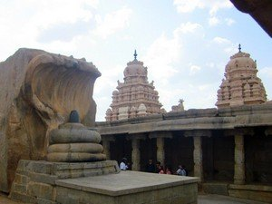
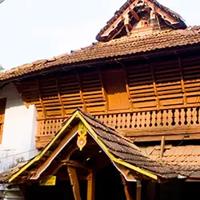
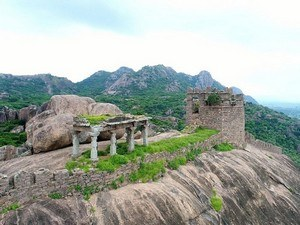

Lepakshi was founded in the 16th century during the reign of the Vijayanagara king, Aliiya Rama Raya. Virupanna, the royal treasurer was accused of drawing funds without the king's permission from the state treasury to build the Veerabhadra temple at Lepakshi. However, he blinded himself to avoid the king's punishment. Even today one can see two dark stains upon the wall near the Kalyana Mandapa, which are said to be the marks made by his eyes. Hence the village is called 'Lepa-akshi', means a village of the blinded eye.
to know more click here
The Undavalli Caves are ancient cave temples believed to be built between 4th and 5th centuries by Gupta dynasty. The caves are located on a hill overlooking the Krishna River. These caves have been carved out of solid sandstone on a hillside.
to know more click here

Take a step into the
to know more click here
royalty of the bygone days by visiting Poonjar Palace, one of the historical buildings in Kerala. We are not kidding when we say that this alluring palace, constructed from wood, is a testament to Kerala’s traditional architecture.
to know more click here

Kondaveedu Fort was constructed during the time of Telugu Chodas, strengthened by Kakatiyas and occupied by Prolaya Vema Reddy who shifted his capital from Addanki to Kondaveedu in 1323 AD. Later it was taken over by Gajpathis of Orissa and ravaged by the Bahmani Sultans in 1458.
to know more click here